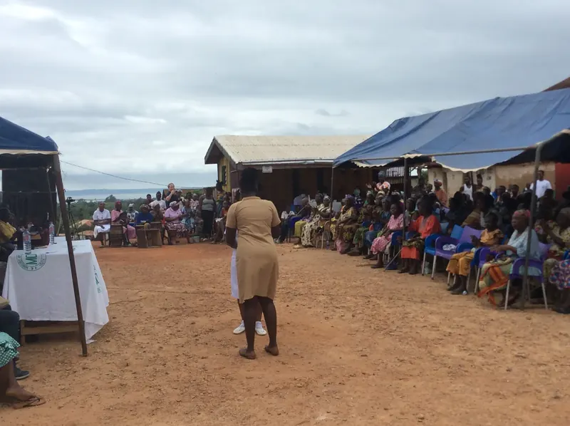
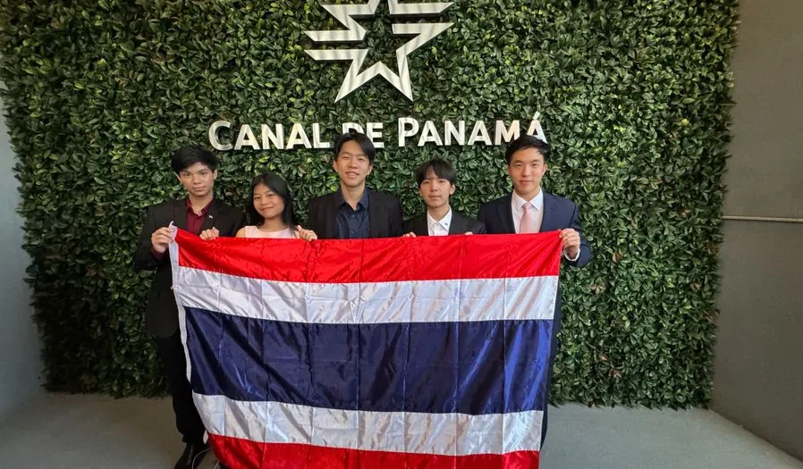
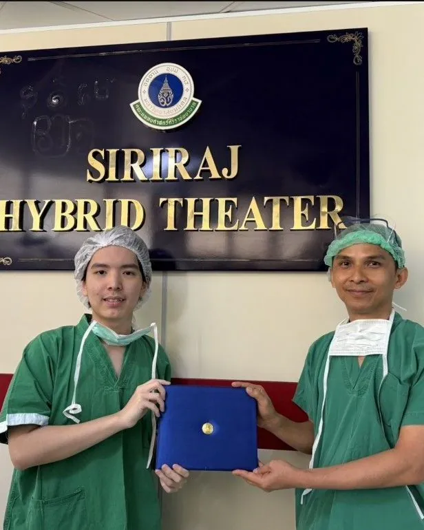

I’m a Grade 12 student at Ruamrudee International School in Bangkok, and I want to study biomedical engineering. For more than a year I saw doctors about an inflammatory eye disease without getting an answer. It turned out to be vernal keratoconjunctivitis, and once it had a name, the right treatment could start.
That gap between noticing a problem and knowing what it is runs through most of my work. In 2024 I started MedLink Pathways to bring volunteer doctors to highland villages in Mae Chaem, where many families live more than eight hours from a hospital. What we saw there led to EpivaScan, then TeleSync and Pulma: low-cost tools that help people recognise a health problem early.
Debate is the other half of how I think. Arguing for Thailand at the 2025 World Schools Debating Championship taught me to attack my own case before anyone else does, which is also how I try to read medical evidence.
Leadership & Impact
MedLink Pathways, the student-run medical nonprofit I founded in 2024
Founder & President · 2024–now
MedLink Pathways
We bring volunteer doctors and medicine to highland villages in Mae Chaem, Chiang Mai, and teach first aid in local schools.
On clinic days I run the patient queue, which mostly means listening to histories. Almost nothing we see is rare. The families simply never had a doctor close enough to look.
Volunteer doctors, medicine and first aid for highland villages, with Banphaeo Hospital.
Community Empowerment
Physics, English and bakery classes, and help selling what highland families make.
Medical Exploration
Hospital shadowing for members, and crew work at international spine-surgery conferences.
Research & Innovation
Student-built screening devices, including Pulma and EpivaScan.
In the News

In the news
Ghanaian TimesBy Benedicta Gyimaah Folley
MamaCare Ghana supports health workers with nutrition training
The Ghanaian Times reported on the project MedLink Pathways funded with MamaCare Ghana. Ten health and community workers in Biakoye District received teaching materials on child nutrition and malaria prevention for the families they serve.
Low-cost screening, from a ten-second breath test to a skin check from one photo
Founder & lead engineer · 2026
Pulma
A $100 breath test for lung-cancer risk
Low-dose CT catches lung cancer early but rarely reaches the people who need it. Pulma reads the pattern of volatile organic compounds in a ten-second breath, and a model turns that pattern into a risk score. Physicians at Banphaeo, Rajavithi and Ramathibodi hospitals reviewed it.
Take a photo of a skin concern and see which of 13 common conditions it most resembles. It started on our first MedLink trip, when we saw how common skin conditions were in Mae Chaem. The model is public on Hugging Face, and you can try it on this site.
A pocket-sized exam device and guided app that bring heart sounds, lung sounds and vital signs into a video consultation, so remote care can include a real check-up.
An EEG headband that adapts therapeutic music to a dementia patient’s brainwaves in real time, so the therapy can happen at home. I managed our clinical validation.
Debate
Thailand’s national team, and a habit that carries over to medicine

WSDC 2025, Panama City
Thailand National Debate Team · 2024–now
Representing Thailand in Panama
I was one of five debaters chosen for Thailand at the 2025 World Schools Debating Championship, and the highest-ranked Thai speaker across international competitions in 2025 and 2026.
In round seven our octofinal spot was on the line, with twenty-five minutes of prep and two teammates split over the motion. I gave each of them four minutes to build the strongest version of the other’s case. What came out was stronger than either, and we won.
Research & Medicine
Spine-surgery research, conferences, and shadowing in hospitals
First authorOral presentation · July 2026
Evolution and Clinical Validation of a Novel Square Expandable Cannula for Uniportal Interlaminar Endoscopic Lumbar Interbody Fusion (Endo-ILIF)
9th Singapore Spine Society Annual Meeting, with the 6th SMISS-AP and 11th ASEAN MISST · Singapore
Minimally invasive endoscopic spinal fusion has an engineering dilemma: narrow cannula corridors protect nerves but restrict cage size, while wider corridors fit conventional cages but increase dilation trauma. The paper introduces a reversibly expandable cannula that changes from a circle to a square, separating incision size from cage footprint.
Bench testing confirmed the prototype’s structural integrity and reliable expansion and collapse during cage impaction. Clinically, it was evaluated in 36 patients undergoing Endo-LIF with continuous neurophysiological monitoring, tracking new postoperative neurological deficits and changes in Oswestry Disability Index. I designed the instrument in AutoCAD, did the literature review and wrote the manuscript.
Research Award for Outstanding Achievement, 16th ThaiMISST 2025

Siriraj Hospital, June 2026
Clinical shadowing · 2024–26
Shadowing
Neurosurgery at Siriraj Hospital in June 2026, watching endoscopic decompressions guided by C-arm fluoroscopy in the Hybrid Theater. Spine surgery at Tan Tock Seng and Mount Elizabeth hospitals in Singapore.
Siriraj Hospital
Rajavithi Hospital
Banphaeo Hospital
Samitivej Hospital
Thabo Crown Prince Hospital
Bandung Crown Prince Hospital
Tan Tock Seng Hospital
Mount Elizabeth Hospital
Achieve Spine and Orthopaedic Centre
Beyond the Classroom
Speaking, tutoring and organizing at Ruamrudee International School
Speaker · TEDxYouth@RIS 2024
Turning Busyness Into Progress
One of eight speakers chosen from more than 50 applicants. The talk argues against treating a long activity list as proof of ambition.